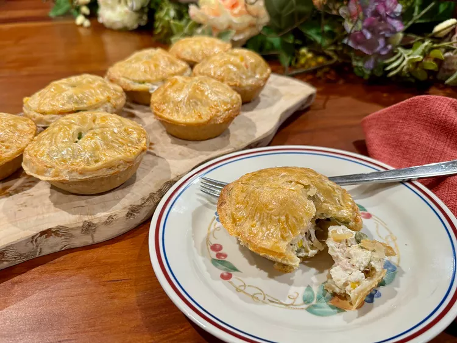

Chicken Pot Pies

How to Make Mini Chicken Pot Pies
These mini chicken pot pies are cleverly made using frozen
mini pie shells for bottom crusts,
and refrigerated pie dough, cut into circles, for top crusts.
Mini Chicken Pot Pies Ingredients :
- package frozen mini pie shells
- pie crust
- mixed vegetables
- 1/2 cup water
- package soft French cheese,
- heavy cream
- hopped cooked chicken
- teaspoon freshly ground black pepper
- salt to taste
- large egg
- tablespoon water
Steps :
- Preheat the oven to 400 degrees.
- Place frozen vegetables into a microwave.
- Stir Boursin into vegetables until melted.
- Using a 3-inch round biscuit cutter,.
- Bake in the center of the preheated oven until lightly browned.
- Remove foil tins from pies and serve warm.